the term "recursive function" in computability seems to be used loosely and defined differently by different books, but the general consensus seems to be that mu-recursive functions (in reference to kleene's mu-operator)-operator), aliased partial recursive functions are defined as the complete class of recursive functions which is proved to represent the class of algorithmically computable functions (functions that can be computed by a machine) and the primitive recursive functions are a subset of that class restricted to total functions. the term recursive function usually seems to refer to the more general class of computable functions (the former).
suppose  is some fixed number and
is some fixed number and
where  is some given def-total-func of two variables. then 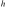 is said to be obtained from by primitive recursion, or simply recursion.
is some given def-total-func of two variables. then 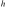 is said to be obtained from by primitive recursion, or simply recursion.
godel defined a collection of number-theoretic functions 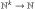 that, according to his intuition, represented all the computable functions. his definition was as follows:
- successor. the function 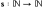 given by 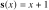 is computable.
- zero. the function 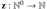 given by 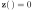 is computable.
- projections. the functions 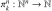 given by
 , 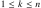, are computable.
, 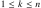, are computable. - composition. if 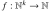 and 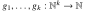 are computable, then so is the function 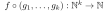 that on input gives 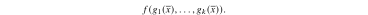
primitive recursion: if and 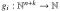 are computable, , then so are the functions
 , defined by mutual induction as follows:
, defined by mutual induction as follows:
where .
- unbounded minimization. if 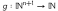 is computable, then so is the function 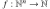 that on input gives the least
 such that 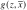 is defined for all 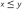 and 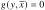 if such a exists and is undefined otherwise. we denote this by
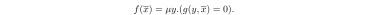
such that 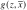 is defined for all 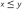 and 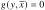 if such a exists and is undefined otherwise. we denote this by
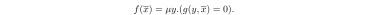
the functions defined by 1 through 6 are called the 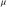-recursive functions. the functions defined by 1 through 5 only are called the primitive recursive functions.
- the constant functions
 are primitive recursive:
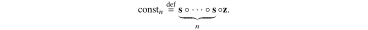
are primitive recursive:
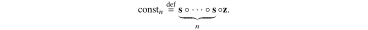 addition is primitive recursive, since we can define
this is a bona fide definition by primitive recursion: in rule blk-recursive-func-schema-5, take 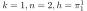, and 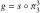. then
multiplication is primitive recursive, since
note how we used the function 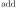 defined previously. we are allowed to build up primitive recursive functions inductively in this way.
exponentiation is primitive recursive, since
the predecessor function is primitive recursive
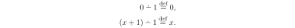- proper subtraction: is primitive recursive, and can be defined from predecessor in exactly the same way that addition is defined from successor.
the sign function is primitive recursive:
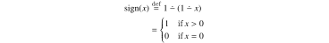the relations
 , and 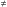, considered as (0,1)-valued functions, are all primitive recursive; for example,
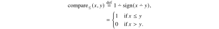
, and 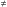, considered as (0,1)-valued functions, are all primitive recursive; for example,
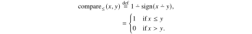- functions can be defined by cases. for example, is primitive recursive: 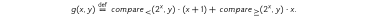
inverses of certain functions can be defined. for example, is primitive recursive: 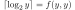, where
and
is from the previous example. the function  just continues to add 1 to its first argument
just continues to add 1 to its first argument  until the condition 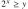 is satisfied. this must happen for some . inverses of other common functions, such as square root, can be defined similarly.
until the condition 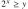 is satisfied. this must happen for some . inverses of other common functions, such as square root, can be defined similarly.
observe that all primitive recursive functions are total, whereas a -recursive function may not be. there exist total computable functions that are not primitive recursive; one example is Ackermann's function:
more primitive recursive functions include:
- 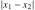
- 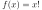
- 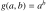
- 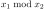
the name "recursive" comes from definition by recursion where a new function is defined by specifying each new value  in terms of previous values 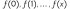, and previously defined functions. for example, 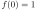, and 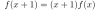 defines 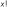 in terms of multiplication. the primitive recursive functions constitute a very large class of computable functions containing almost all functions on 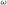 commonly found in mathematics.
in terms of previous values 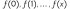, and previously defined functions. for example, 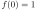, and 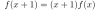 defines 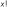 in terms of multiplication. the primitive recursive functions constitute a very large class of computable functions containing almost all functions on 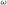 commonly found in mathematics.
the class of primitive recursive functions is the smallest class 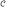 of functions closed under the following schemata.
- blk-recursive-func-schema-1the successor function, 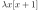, is in .
- blk-recursive-func-schema-2the constant functions, , are in , 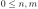.
- blk-recursive-func-schema-3the identity functions (also called projections), 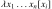, are in , 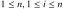.
- blk-recursive-func-schema-4(composition) if 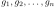, 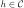, then
is in where 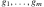 are functions of
 variables and is a function of 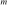 variables.
variables and is a function of 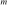 variables. blk-recursive-func-schema-5(primitive recursion) if and then where
assuming
and are functions of and variables respectively. (in case , a 0-ary function is a constant function which is in by schema 2.
hence, a function is primitive recursive just if there is a derivation, namely a sequence such that each , is either an initial function (i.e., is obtained by schemata blk-recursive-func-schema-1, blk-recursive-func-schema-2, or blk-recursive-func-schema-3), or is obtained from , by an application of blk-recursive-func-schema-4 or blk-recursive-func-schema-5. exa-lambda-calc-1.
the class of partial recursive functions is the least class obtained by closing under blk-recursive-func-schema-1 through 5 for the primitive recursive functions and the following schema 6. a total recursive function (abbreviated recursive function) is a partial function which is total.
(unbounded search) if is a partial recursive function of variables, and
then is a partial recursive function of
variables. (here, is the unbounded search operator)
the definition def-recursive-function-soare is the same as def-mu-recursive-functions.
the term recursion refers to a function defined by induction. we first define and hen define in terms of previously defined functions using as inputs and  . for example, the factorial function is defined by the recursion schemes
where we assume that multiplication has been previously defined.
. for example, the factorial function is defined by the recursion schemes
where we assume that multiplication has been previously defined.
up until the early 1930s, the term "recursive function" meant what we now call a primitive recursive function to distinguish it from the Herbrand-Gödel general recursive function. in 1931 Gödel used primitive recursive functions in the proof of his famous incompleteness theorem and called them simply by the German term "rekursiv." the main property of recursion is the primitive recursion scheme (def-primitive-recursive-schema-5) below, which yields an inductive definition of using the preceding value and previously defined functions and . [Kleene 1952] put the primitive recursive functions in the following succinct form which has become standard.
the class of primitive recursive functions is he least class of functions closed under the following schemes (1)-(5).
- the successor function is in .
- the constant functions are in , .
- the identity functions , , are in .
- (composition) if , then
is in , where are functions of variables, , and is a function of variables.
def-primitive-recursive-schema-5(primitive recursion) if and , then where
where , the variables treated as parameters, assuming
and are functions of and variables, respectively. and is a function of variables. (in case , a 0-ary function is a constant function which is in by scheme 2).
[kleene 1952] showed that all the usual functions on are primitive recursive, including and limited subtraction ,
the class of -recursive (partial) functions is the least class obtained by closing under schemes (1)-(5) for the primitive recursive functions and the following scheme (6).
- (unbounded search) if
 is a partial function, and
then is in . (here diverges if there is no such . hence, may be nontotal.)
is a partial function, and
then is in . (here diverges if there is no such . hence, may be nontotal.)
the constant function for all is primitive recursive.
this may be true by definition when considering def-primitive-recursive, but not when considering the axioms of def-mu-recursive-functions.
we can gain intuition by looking at it in the form of a matrix of functions, in which all items in the same column are equal and each column corresponds to the successor of the value corresponding to the column on its left:
![\begin{tikzpicture}
\matrix(A) [matrix of math nodes] {
C_0^0 & C_1^0 & \cdots & C^0_i\\
C_1^0 & C_1^1 & \ddots\\
\vdots & \ddots & \ddots\\
C_n^0 & & & C_i^n\\
\verteq & \verteq & \cdots & \verteq\\
0 & 1 & \cdots & i\\
};
\draw[decorate, decoration={calligraphic brace, amplitude=7pt}, thick] (A-1-4.north east) -- (A-4-4.south east) node[right, midway, xshift=10pt]{functions};
\draw[decorate, decoration={calligraphic brace, amplitude=3pt}, thick] (A-6-4.north east) -- (A-6-4.south east) node[right, midway, xshift=10pt]{constants};
\end{tikzpicture}](ltx/08b364c618f.svg)
if we write , we have the recursion equations
we can rewrite these equations as
where the functions , and are primitive recursive functions; in fact they are initial functions. also, is a primitive recursive function, since it is obtained by composition of primitive recursive functions. thus, the preceding is a valid application of the operation of recursion to primitive recursive functions. hence is primitive recursive.
the recursion equations for are
this can be rewritten
here, is the zero function.
is , and are projection functions. notice that the functions , and are all primitive recursive functions, since they are all initial functions.  is also primitive recursive, so is a primitive recursive function since it is obtained from primitive recursive functions by composition. finally, we conclude that
is primitive recursive.
is also primitive recursive, so is a primitive recursive function since it is obtained from primitive recursive functions by composition. finally, we conclude that
is primitive recursive.
for , the recursion operations are
more precisely, , where
and
finally, is primitive recursive because
and multiplication is already known to be primitive recursive.
for , the recursion equations are
note that these equations assign the value 1 to the "indeterminate"  .
.
the predecessor function is defined as follows: . the recursion equations for are simply
hence, is primitive recursive.
the function is defined as follows: this function should not be confused with the function , which is undefined if . in particular, is total, while is not.
we show that is primitive recursive by displaying the recursion equations:
the function is defined as the absolute value of the difference between and . it can be expressed simply as
and thus is primitive recursive.
is the "integer part" of the quotient . for example, and . the equation shows that is primitive recursive. note that according to this equation, we are taking .
the function is primitive recursive
consider the function is recursive primitive by the-bounded-min and so is primitive recursive aswell. and by def-prim-recurs-def-by-cases the function is primitive recursive too.
the function is primitive recursive.
consider the function is recursive primitive because the relation is.
the function that generalizes the example because 3 is 11 in binary form, and 100 is 4 in binary, which gives 11100 in binary which is the binary representation of the decimal 28.
let denote the length of digits in the binary representation of . we have
we have is primitive recursive, and exponentiality is primitive recursive as well as addition and multiplication and so is primitive recursive by composition.
the function giving the fibonacci sequence, i.e. , is primitive recursive.
let , if we show that is primitive recursive then we can simply define .
because we were able to define in terms of and other p.r. functions we know is p.r.